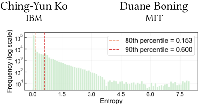
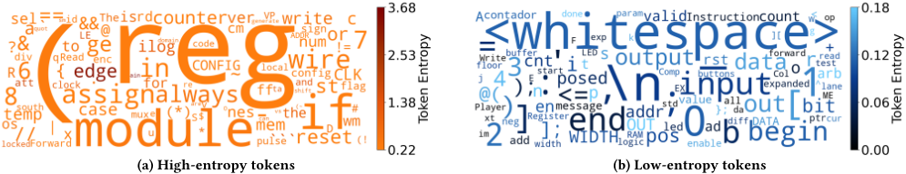
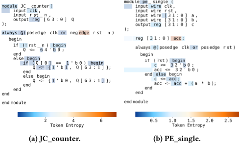
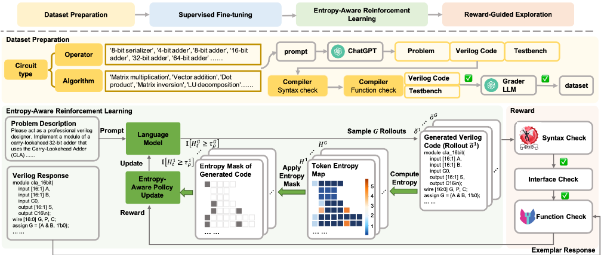
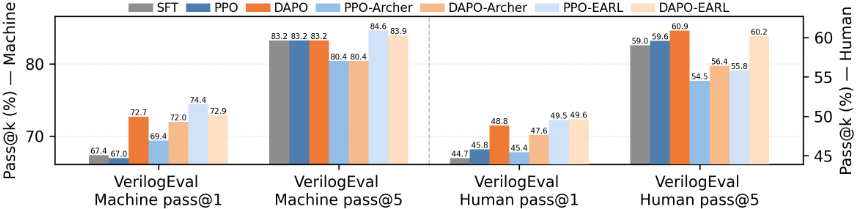

EARL：面向可靠 RTL 代码生成的熵感知强化学习（RL）对齐方法
论文针对 LLM 生成 Verilog RTL 中存在的语法错误、功能幻觉与设计意图对齐不足问题，指出 SFT 无法在训练中利用编译器与 testbench 反馈，而标准 RLVR 将梯度均匀摊到所有 token，在长结构化 RTL 序列中稀释学习信号。作者对 RTL 生成做 token 级熵分析，发现熵分布高度偏斜：超过 80% 的 token 熵低于 0.15，仅少数高熵 token（如 always、if、assign、posedge）主导控制流与模块结构。据此提出 EARL 框架：在 GPT-4 合成、并经 iverilog 语法检查、testbench 执行与评分 LLM 三级过滤的数据集上做 SFT 初始化，再用响应级分位数掩码（最优 ρ=0.8）把策略梯度门控到高熵 token，可叠加于 PPO/DAPO 目标。奖励采用级联可验证信号：iverilog 语法检查、模块名与端口接口一致性、Yosys eqy 功能等价检查，模拟工业验证流水线。基于 DeepSeek-Coder-7B 的实验显示，EARL 在 VerilogEval 与 RTLLM 上取得最优 pass@1/pass@5，RTLLM 功能正确率较最佳 RL 方法提升 14.7%，同时训练更稳定。
LLM 生成 RTL 代码时存在语法错误、功能幻觉与设计意图对齐弱的问题。现有 SFT 方法依赖预先收集的数据集，训练中无法利用对功能正确性至关重要的编译器与 testbench 反馈；RLVR 虽可利用可执行、可形式化检查的信号，但面临两个困难：编译/testbench 反馈稀疏且延迟，credit assignment 困难；标准 RLVR 将更新均匀分布到所有 token，而 RTL 中只有少部分 token 决定结构与功能正确性，导致梯度预算被浪费。
EARL 是面向 Verilog 生成的熵感知强化学习框架，含四个耦合阶段：(1) 数据集构建：用 GPT-4 生成自然语言规格-Verilog 实现-testbench 三元组，并经 iverilog 语法验证、testbench 执行与评分 LLM 三级过滤；(2) SFT 监督初始化，建立语法流畅性与结构先验；(3) 熵感知 RL：对每个 rollout 计算 token 熵，采用响应级分位数掩码（token 仅在熵超过该响应的 ρ 分位数时获得完整梯度更新，低熵 token 权重降为零以保留 SFT 分布），以 entropy gating 扩展 DAPO 式目标，且与优化器解耦（可实例化为 PPO 或 DAPO）；(4) 级联可验证奖励：先 iverilog 语法检查（失败即零奖励），再检查模块名与端口声明的接口一致性（部分匹配给中间奖励），最后用 Yosys 的 eqy 引擎做与参考实现的功能等价检查（通过给最高奖励，near-miss 略低以防 reward hacking），层级结构模拟工业 compilation-simulation-verification 流水线。
VerilogEval-Machine：pass@1 72.9%、pass@5 83.9%，超过最强 RL 基线 VeriReason 3.1% 与 0.8%，超过最佳 SFT 模型 4.2%（pass@1）
VerilogEval-Human：pass@1 49.6%、pass@5 60.2%，均为所有方法中最高
RTLLM v1.1：语法 pass@5 达 100%，功能正确率 68.9%，超过最佳 RL 方法 14.7%、最佳 SFT 方法 17.2%
消融实验：DAPO-EARL 在所有基准上最佳，pass@1 较 SFT 基线提升 5.2%；熵掩码（EARL）优于熵加权（Archer），DAPO 整体优于 PPO
熵分位数消融：ρ=0.8 附近性能最优，过低（0.2）引入噪声、过高（1.0）排除关键决策 token
熵统计分析（基于超过 2.1×10^5 个生成 token）：超过 80% 的 token 熵低于 0.15，仅少数 token 熵超过 0.6，形成高不确定性重尾
相对已有工作的区别：(1) 首次在 RTL 代码生成（而非 chain-of-thought 推理）场景做 token 级熵分析，发现高熵集中在敏感列表、条件分支等硬件控制流分叉点；(2) 提出熵门控（分位数掩码）的选择性策略更新，替代全 token 均匀更新，且与具体 RL 算法解耦、optimizer-agnostic，可叠加在 PPO/DAPO 上（对比 Archer 的熵加权，掩码方式收益更大）；(3) 奖励设计借鉴工业 EDA 流程，用 Yosys eqy 功能等价检查替代易被 game 的 AST 相似度奖励，并以级联结构（语法→接口→功能）分配探索预算。
相关度级别：high
命中能力域：2.7 EDA/验证自动化与 AI 辅助 | 2.2 RTL 设计与实现
理由：论文直接命中 2.7 域明确列出的'LLM/AI 辅助 RTL 生成'方向：以可验证奖励（编译、testbench、Yosys eqy 功能等价）对齐 LLM 生成功能正确的 Verilog，其级联奖励结构明确借鉴工业验证流水线，与团队沉淀验证自动化与 AI 辅助能力的路线一致；其产出物是功能正确的 RTL，对 2.2 域的 RTL 设计效率有潜在支撑价值。但需注意论文实验停留在 VerilogEval/RTLLM 等小规模基准，未涉及团队面对的复杂协议 IP（LPDDR5X/HBM4/UCIe）所需的时序、功耗、CDC/RDC 与协议合规约束，因此对团队而言是高相关的方法学输入而非可直接交付的工业方案。
建议动作：深入精读并做内部分享
arXiv:2511.12033v2 [cs.LG] 2026年2月24日
Jiahe Shi 麻省理工学院（MIT）
Zhengqi Gao MIT

生成，在语法流畅性和基本设计转换方面取得了令人鼓舞的成果 [1, 7, 18]。
然而，实现可靠的 RTL 生成仍然具有挑战性。大多数现有方法依赖于在预先收集的数据集上进行监督微调（SFT）[2, 8]。虽然这提升了语法流畅性，但对功能正确性至关重要的编译器和测试平台（testbench）反馈在训练过程中仍未被利用。这推动了可验证奖励强化学习（RLVR）[22] 的出现，该方法利用可执行且可形式化检查的信号来使模型输出与设计意图对齐。然而，将 RLVR 应用于 RTL 代码生成带来了两个根本性困难。首先，编译器和测试平台反馈本质上是稀疏且延迟的，这使得在长且结构化的代码序列中进行信用分配尤为困难 [24]。其次，标准 RLVR 方法将更新均匀地分布到所有 token 上，而实际上只有一小部分 token 决定着结构和功能正确性。
为了理解学习信号应当分配到何处，我们分析了 RTL 生成中的 token 级熵。如图 1 所示，熵分布高度偏斜。大多数 token 以接近零的熵生成，只有一小部分 token 表现出显著更高的不确定性。这一模式与 RLVR 研究中的近期发现相呼应 [3, 21, 24]。在 RTL 中，这种不平衡更加明显，因为确定性的语法和端口声明在序列中占据主导地位。这些观察表明，均匀更新会浪费梯度预算，从而促使人们研究能够选择性地聚焦于高熵、高影响位置的强化学习（RL）方法。第 3 节给出了更详细的熵研究。
为了应对这些挑战，我们提出了 EARL，一个面向 Verilog 生成的熵感知强化学习框架。EARL 将监督初始化与可验证的多信号奖励（语法、接口、功能）相结合，并引入了熵引导的选择性更新。通过将策略梯度集中在不确定且功能关键的 token 上，EARL 在保持训练稳定性的同时，提升了与硬件正确性的对齐程度。我们的贡献总结如下：
大语言模型（Large Language Model, LLM）的最新进展在硬件设计自动化方面展现出巨大潜力，尤其是在利用自然语言合成寄存器传输级（Register-Transfer Level, RTL）代码方面。尽管取得了这些进展，模型能力与真实世界 RTL 设计需求之间仍存在差距，包括语法错误、功能性幻觉以及对设计者意图的对齐较弱。可验证奖励强化学习（Reinforcement Learning with Verifiable Rewards, RLVR）为弥合这一差距提供了一种有前景的途径，因为硬件提供了可执行且可形式化验证的信号，可用于进一步使模型输出与设计意图对齐。然而，在长且结构化的 RTL 代码序列中，并非所有 token 对功能正确性的贡献都相同，将梯度简单地均匀分布到所有 token 上会稀释学习信号。我们在 RTL 生成中的熵分析得出的一个关键洞察是：只有一小部分 token（例如 always、if、assign、posedge）表现出高不确定性，并在很大程度上影响控制流和模块结构。为应对这些挑战，我们提出了 EARL，一个面向 Verilog 生成的熵感知强化学习框架。EARL 使用可验证奖励信号进行策略优化，并引入熵引导的选择性更新，将策略梯度门控至高熵 token。这种方法保持了训练稳定性，并将梯度更新集中在代码中功能重要的区域。我们在 VerilogEval 和 RTLLM 上的实验表明，EARL 相较于先前的 LLM 基线将功能通过率最高提升了 14.7%，同时减少了不必要的更新并提高了训练稳定性。这些结果表明，将 RL 聚焦于关键的高不确定性 token，能够为结构化 RTL 代码生成带来更可靠、更有针对性的策略改进。论文录用后我们将发布代码。供审稿使用的匿名代码仓库见 https://anonymous.4open.science/r/EARL-1C25。
大语言模型（Large Language Models, LLMs）在自然语言处理和通用代码生成领域取得了显著成功，在理解上下文、建模语义以及跨广泛任务合成连贯输出方面展现出强大的能力 [5, 6]。虽然这些模型已经彻底改变了软件开发工作流程，但将 LLMs 应用于硬件设计等专业化领域仍然是一个充满挑战的前沿方向 [11]。
其中一个挑战是寄存器传输级（Register-Transfer Level, RTL）代码的生成，此类代码通常使用 Verilog 编写。RTL 代码是数字硬件设计的基础，负责将架构意图转化为可综合的逻辑。编写 RTL 代码需要深厚的领域知识和大量的工程投入。语法、端口声明或时序语义上的微小错误都可能导致设计无法编译或功能不正确。自动化 RTL 代码生成有望显著加速硬件开发周期、减少工程投入，并使硬件设计更加易于上手。近期的研究工作已探索将 LLMs 应用于 Verilog
大语言模型（LLM）的最新进展推动了将其应用于 Verilog 代码生成的研究 [2, 4, 8, 12, 18-20, 26, 27]。现有方法可分为三类：监督微调（supervised fine-tuning）、提示工程（prompt engineering）和强化学习（reinforcement learning）。
监督微调（SFT）方法利用硬件专用数据集对预训练 LLM 进行适配。典型代表包括 RTLCoder [8] 和 VeriGen [19]，它们在自动生成的指令-代码对上进行微调。其他工作则通过领域特定的变换或数据增强来丰富数据。例如，BetterV [12] 利用了 Verilog 到 C 的翻译。尽管取得了进展，SFT 方法仍受限于有限且含噪的数据集，并且保持静态，缺乏自适应反馈。
提示工程方法通过专门的提示或交互式工具调用来引导模型。RTLFixer [20] 采用 ReAct 提示与检索技术来迭代修复语法错误。OriGen [2] 将示例提示与自我反思及代码到代码的变换相结合，而 HaVen [27] 提出了一种幻觉分类体系，并在符号模态上采用思维链（chain-of-thought）提示。基于提示的方法能够提升语法和功能正确性，但由于依赖反复的综合或工具反馈，往往面临计算成本高、可扩展性差的问题。
强化学习近来被探索用于弥合流畅性与功能正确性之间的差距。在基于人类反馈的强化学习（RLHF）[10, 17] 的基础上，PPOCoder [16] 和 PLUM [29] 等方法利用编译器或测试结果作为奖励信号。在 Verilog 生成方面，基于可验证奖励的强化学习（RLVR）风格的方法已经出现 [23, 25]，但现有设计存在局限：基于抽象语法树（AST）相似度的奖励可能被投机利用而无功能收益 [23]，而结合蒸馏的结构化推理可能限制多样性 [25]。这些局限性凸显了对强化学习框架的需求：这类框架应能利用可验证的多信号反馈，同时避免统一或低效的 token 级更新。
近端策略优化（PPO）。PPO [14] 是一种被广泛使用的策略梯度算法，它通过裁剪新策略 𝜋 𝜃 与旧策略 𝜋 𝜃 old 之间的概率比率来稳定强化学习（RL）。其目标函数如下：
其中 D 是由查询 𝑞 及其对应真实答案 𝑎 组成的数据集，˜ 𝑜 = ( 𝑜 1 , . . . , 𝑜 𝑇 ) 表示从旧策略 𝜋 𝜃 old 采样得到的输出序列，𝜖 ∈ R 是裁剪超参数，ˆ 𝐴 𝑡 是由学习到的价值函数给出的优势估计。
组相对策略优化（GRPO）。GRPO [15] 去除了价值函数，通过在同一提示所采样的一组 rollout 内对标量奖励进行归一化来计算优势。这种组内归一化免除了对 critic（评论家网络）的需求，降低了内存开销并提升了稳定性。其目标函数如下：
其中每组包含从同一查询 𝑞 采样得到的 𝐺 个 rollout { ˜ 𝑜 𝑖 } 𝐺 𝑖 = 1 。对于每个 ˜ 𝑜 𝑖 ，优势 ˆ 𝐴 𝑖 𝑡 是通过在由 𝐺 个采样响应 ( ˜ 𝑜 1 , . . . , ˜ 𝑜 𝐺 ) 组成的组内对奖励 𝑅 𝑖 进行归一化而得到的：
动态采样策略优化（DAPO）。DAPO [28] 通过 clip-higher、动态采样、token 级策略梯度损失以及过长奖励塑形（overlong reward shaping）等技术对 GRPO 进行了扩展。
熵感知 RLVR。近期研究强调了 token 级熵在可验证奖励强化学习中的重要性。针对数学推理任务的近期工作 [3, 21, 24] 表明，高熵的少数 token 充当决定下游推理轨迹的关键决策点。相比之下，低熵 token 通常对应于解中常规且高度可预测的组成部分，对下游推理结果的贡献很小。这些发现表明，RL 方法应将梯度更新集中在高熵 token 上，而不是统一更新所有 token。受这些发现启发，我们考察了寄存器传输级（RTL）生成中的熵模式，并设计了 EARL 来利用 Verilog 代码中的高熵 token。

modulepe

While prior studies have examined entropy in chain-of-thought reasoning [3, 21, 24], we analyze entropy in RTL code generation at token level. Specifically, the entropy of the 𝑡 -th token 𝐻 𝑡 is defined as:
Here 𝑉 is the vocabulary size, z 𝑡 ∈ R 𝑉 is the pre-softmax logits, and 𝑇 is the decoding temperature. Note that entropy is computed per position, not per token type. For example, the same lexical token (e.g., begin ) may appear with low entropy in a deterministic context or high entropy in an ambiguous structural context. Thus, entropy reflects uncertainty at the generation step, not an inherent uncertainty of a token type. This metric is used throughout our analysis and later in the EARL training objective.
To analyze entropy behavior in RTL tasks, we begin with concrete examples. We compute entropy using a DeepSeek-7B coder model that we fine-tuned on our curated specification-implementation dataset. All rollouts use temperature at temperature 𝑇 = 1 . 0. For each generated token 𝑡 , we record its entropy 𝐻 𝑡 following the definition in Eq. (4). Figure 3 visualizes token-level entropy for two RTL modules from the RTLLM v1.1 benchmark [9]. For each generated response, only tokens whose entropy exceeds the 80th percentile of that response are highlighted; low-entropy tokens are shown without background shading. For instance, in the JC_counter example (Figure 3a), control-structure keywords (e.g., if , begin ) show higher entropy, purely syntactic or declarative tokens (e.g., end , endmodule , numeric literals) exhibit near-zero entropy. Similarly, in the PE_single module (Figure 3b), the accumulation logic (e.g., acc ) exhibits elevated uncertainty due to its arithmetic and dependency structure.
Beyond these qualitative examples, we analyze entropy statistically over more than 2 . 1 × 10 5 generated tokens produced by the same fine-tuned model. Figure 1 presents the overall entropy distribution. The distribution is heavily skewed: over 80% of tokens fall below 0 . 15, while only a small minority exceed 0 . 6, forming a distinct heavy tail of high-uncertainty positions. To identify what these extremes correspond to, Figure 2 shows the top-100 lowestentropy tokens and top-100 highest-entropy tokens with frequency ≥ 10. Two consistent patterns emerge:
(i) Deterministic bulk vs. uncertain critical tokens. Low-entropy positions correspond almost exclusively to rigid, grammar-driven Verilog constructs such as module headers, port lists, and white space. High-entropy positions, in contrast, occur at tokens that govern control or timing behavior-e.g., sensitivity triggers, conditional guards, and data-path operations-reflecting genuine semantic uncertainty rather than lexical variability.
(ii) 熵集中在结构交汇处。如图 3 所示，热力图显示高熵区域出现在敏感列表和条件分支处，而这正是模块行为与时序产生分歧的地方。这与“分叉 token”（forking tokens）的概念 [24] 相呼应，但此处的语义分叉代表的是硬件控制流和信号行为，而非自然语言语篇。
这些观察结果证实，在 RTL 代码中，熵自然地将确定性语法与功能性决策点区分开来。这促使我们采用选择性更新，而非对整个序列进行统一更新。
为了弥合自然语言规范与功能正确的 Verilog 之间的鸿沟，我们提出了 EARL，一个专为 RTL 生成量身定制的熵感知强化学习（Entropy-Aware Reinforcement Learning）框架。图 4 展示了完整的流水线。EARL 解决了以往面向 Verilog 的大语言模型方法中的关键局限，包括仅靠监督微调（Supervised Fine-tuning, SFT）无法捕获功能正确性信号，以及在长而结构化的 RTL 序列上采用统一强化学习更新的低效性。

该流水线由四个紧密耦合的阶段组成。(1) 数据集准备。我们精心构建了一个包含自然语言规范、Verilog 实现及对应测试平台（testbench）的合成数据集。该数据集提供了经过功能验证的训练三元组，确保在多样化设计任务中的语法有效性和语义覆盖。(2) 监督微调。在精心构建的数据集上对预训练代码大语言模型（LLM）进行微调，以建立强大的语法流畅性和结构先验。这一初始化使模型具备可靠生成语法正确、接口格式规范的 RTL 模块的能力。(3) 熵感知强化学习。在 SFT 初始化的基础上，我们引入 EARL，它将可验证的编译器/测试平台信号与熵引导的选择性更新相结合。与现有的可验证奖励强化学习（RLVR）方法在所有 token 上均匀传播梯度不同，EARL 侧重于那些不成比例地主导模块结构、控制流和时序行为的高熵 token，同时对确定性语法 token 保持保守更新。(4) 奖励引导的探索。为使生成结果与下游硬件需求保持一致，我们设计了一个级联多信号奖励，融合了语法有效性、接口一致性和功能等价性检查。这种分层奖励与工业验证流水线相呼应，确保模型的探索预算被分配给有意义的改进而非语法噪声。
通过将数据集构建、监督初始化与结合可验证信号的熵感知强化学习相集成，EARL 实现了稳健的一次通过（one-pass）RTL 生成。该框架同时提升了功能正确性、稳定了长序列上的 RL 训练，并为将熵驱动优化纳入 RLVR 流水线提供了一种通用方案。
以下小节将详细描述该框架的各个组成部分，包括熵感知强化学习的公式化表述、可验证奖励的设计以及数据集构建流水线。
我们在第 3 节中的熵研究表明，只有少数高熵 token 才能驱动有效学习。然而，现有的 RLVR 流水线对所有 token 施加统一的梯度更新，这会稀释学习信号，并将梯度预算浪费在影响较低的位置上。为解决这一局限，我们提出一种熵门控策略优化方法，在策略优化过程中选择性地强调高不确定性 token（见图 4 中的绿色模块）。对于每次 rollout ˜ 𝑜 𝑖 = ( 𝑜 𝑖 1 , . . . , 𝑜 𝑖 𝑇 𝑖 ) ，我们按照式 (4) 中的定义计算逐 token 熵 𝐻 𝑖 𝑡 。为缓解跨提示词的熵尺度差异，我们采用响应级分位数掩码：仅当 𝐻 𝑖 𝑡 ≥ 𝜏 𝑖 𝜌 时才更新 token 𝑡 ，其中 𝜏 𝑖 𝜌 = Quantile ({ 𝐻 𝑖 𝑡 } 𝑇 𝑖 𝑡 = 1 , 𝜌 ) ， 𝜌 ∈ ( 0 , 1 ) 为选定的阈值。具体而言，熵超过 𝜏 𝑖 𝜌 的 token 获得完整的梯度更新，而低熵 token 的权重被降为零，从而保留其由 SFT 学到的稳定分布。形式上，EARL 在 DAPO 风格的目标函数基础上引入熵门控：
其中，token 级优势 ˆ 𝐴 𝑖 𝑡 遵循式 (3)。指示函数 I [ 𝐻 𝑖 𝑡 ≥ 𝜏 𝑖 𝜌 ] 即为熵掩码，用于区分不同类型 token 的优化强度。该约束强制保证每个组内的多样性，防止出现退化的全通过或全失败组，否则组归一化优势将失效。
| Category.Category | Method.Method | Params..Params. | VerilogEval-Machine pass@1.VerilogEval-Machine pass@1 | pass@5.pass@5 | VerilogEval-Human pass@1.VerilogEval-Human pass@1 | pass@5.pass@5 | RTLLM.Syn. pass@5 | RTLLM.Func. pass@5 |
|---|---|---|---|---|---|---|---|---|
| Base Model | Qwen2.5-Coder | 1.5B | 25.6 | 40.8 | 8.3 | 17.9 | 75.1 | 19.2 |
| Base Model | Qwen2.5-Coder | 3B | 48.4 | 58.9 | 21.3 | 32.7 | 82.9 | 27.3 |
| Base Model | Qwen2.5-Coder | 7B | 52.7 | 69.7 | 23.9 | 41.1 | 86.2 | 31.0 |
| Base Model | DeepSeek-Coder | 6.7B | 8.8 | 34.3 | 4.9 | 19.3 | 89.7 | 41.2 |
| Base Model | CodeLlama | 7B | 26.1 | 49.1 | 18.8 | 28.6 | 15.2 | 9.3 |
| Base Model | CodeQwen-7B-Chat | 7B | 29.1 | 61.9 | 14.8 | 36.8 | 16.1 | 11.0 |
| Supervised | VerilogEval [13] | 16B | 46.2 | 67.3 | 28.8 | 45.9 | N/A | N/A |
| Supervised | ChipNeMo [7] | 70B | 53.8 | N/A | 27.6 | N/A | 28.0 | 20.7 |
| Supervised | RTLLLM [9] | 13B | 65.3 | 77.2 | 43.7 | 51.8 | 52.6 | 40.7 |
| Supervised | RTLCoder [8] | 6.7B | 37.2 | 64.9 | 16.9 | 35.7 | 89.1 | 51.7 |
| Supervised | Fine Tuning OriGen [2] | 7B | 43.1 | 55.1 | 30.8 | 31.9 | 96.5 | 51.7 |
| Supervised | VeriGen [19] | 16B | 44 | 52.6 | 30.3 | 43.9 | N/A | N/A |
| Supervised | HaVen [27] | 6.7B | 66.1 | 81.1 | 43.1 | 55.1 | 81.4 | 38.6 |
| Supervised | BetterV [12] | 7B | 68.1 | 79.4 | 46.1 | 53.7 | N/A | N/A |
| Supervised | AutoVCoder [4] | 7B | 68.7 | 79.9 | 48.5 | 55.9 | 100 | 51.7 |
| Reinforcement | Learning VeriReason [25] | 7B | 69.8 | 83.1 | 47.9 | 58.4 | N/A | N/A |
| Reinforcement | VeriSeek [23] | 6.7B | 61.6 | 76.9 | N/A | N/A | 94.8 | 54.2 |
| EARL (ours) | EARL (ours) | 7B | 72.9 | 83.9 | 49.6 | 60.2 | 100 | 68.9 |
| Category.Category | Method.Method | Params..Params. | VerilogEval-Machine pass@1.VerilogEval-Machine pass@1 | pass@5.pass@5 | VerilogEval-Human pass@1.VerilogEval-Human pass@1 | pass@5.pass@5 | RTLLM.Syn. pass@5 | RTLLM.Func. pass@5 |
值得注意的是，该设计与优化器无关。EARL 可应用于策略梯度目标，而无需修改其核心更新规则。在我们的实验中，我们分别基于 PPO 和 DAPO 实例化 EARL。通过将梯度更新集中于不确定但在功能上至关重要的 token，EARL 实现了更精准的信用分配，减少在确定性语法上浪费的更新，并提升了针对长且结构化的 RTL 序列的 RLVR 训练稳定性。
EARL 的一个核心组成部分是可验证奖励的设计，该奖励使生成过程与下游 RTL 正确性保持一致。受工业 EDA 流程的启发，我们构建了一个级联奖励层次结构（见图 4 中的红色模块），它对应于标准的编译-仿真-验证流水线。给定自然语言规格说明 𝑞，模型生成从其当前策略中采样的 rollout ˜ 𝑜。为了分配奖励，我们通过级联的三阶段验证过程对 ˜ 𝑜 进行评估：首先，我们使用 iverilog 编译候选代码以检查语法有效性。未通过语法检查的程序立即被赋予零奖励，从而避免在无效代码上浪费计算。如果语法检查通过，我们接着评估接口一致性。我们检查模块名和端口声明是否与规格说明匹配。部分匹配获得中等奖励，而完全一致的接口获得更高的评分。最后，我们评估功能等价性。我们调用 Yosys 的 eqy 引擎将输出与参考实现进行比较。通过的候选代码获得最高奖励，而接近通过的候选代码评分略低，以便在不引发奖励作弊（reward hacking）的前提下鼓励探索。
训练 EARL 需要经过功能验证的数据来引导监督初始化，并在强化学习（RL）过程中支持奖励评估。为此，我们构建了一个由规格说明-代码-测试平台三元组组成的合成数据集（见图 4 中的黄色模块）。数据集生成流程包含两个步骤。第一步是合成生成。我们提示 GPT-4 生成多样化的问题描述，涵盖算术运算符、时序逻辑、控制模块和算法电路。每个问题描述都配有一个 Verilog 实现和一个可执行的测试平台。受先前工作 [4, 12] 的启发，我们在多个维度上对提示进行多样化处理，包括难度级别、电路类型和规格说明风格。第二步是编译器驱动的过滤。为保证正确性，我们对所有生成的样本应用三阶段验证流程。首先，使用 iverilog 验证语法有效性。其次，通过执行配对的测试平台来检查功能正确性。最后，我们采用一个大语言模型（LLM）评分器，对功能行为提供额外的语义评估层。只有通过全部三个阶段的样本才会被保留在数据集中。
模型与训练。我们采用 DeepSeek-Coder-7B 作为基础模型。监督微调（SFT）阶段在我们的精选数据集上进行 3 个 epoch 的训练，采用余弦学习率调度，峰值学习率为 5 × 10 - 5，预热步数为 15。对于强化学习，我们应用所提出的 EARL 算法并以 DAPO 进行实例化，采用组采样（每个提示 𝐺 = 6 次 rollout），学习率为 1 × 10 - 6。所有实验均在 4 块 NVIDIA A100 80GB GPU 上进行，全局批大小为 128，推理时温度为 1.0。

基准测试。我们在三个标准 RTL 代码生成基准上进行评估。VerilogEval v1 [13] 包含 143 个机器生成的问题（VerilogEval-Machine）和 156 个专家编写的任务（VerilogEval-Human），旨在测试结构与语义生成能力。RTLLM v1.1 [9] 包含 29 个多样化的 RTL 设计提示，聚焦于真实世界功能。
评估指标。遵循先前工作 [7, 9]，我们使用 pass@k 指标来评估在 𝑘 次尝试内生成正确解的概率，其中 𝑘 ∈ { 1 , 5 }。对于每个提示，我们生成 𝑛 = 5 个补全并计算：
其中 𝑐 为成功补全的数量。
我们将 EARL 的语法正确性与功能正确性同一系列基线方法和最先进方法进行了对比评估，其中包括 SFT 和 RLVR 方法。请注意，为完整起见，我们还报告了基于提示工程的方法的结果，例如 Origen、HaVen。其 pass-k 指标由我们在相同实验设置下自行评估获得。表 1 中的结果表明，EARL 在所有基准测试和指标上均取得了最佳性能。在 VerilogEval-Machine 上，EARL 达到了 72.9% 的 pass@1 和 83.9% 的 pass@5，分别超过最强 RL 基线 VeriReason 3.1% 和 0.8%，并在 pass@1 上比最佳 SFT 模型高出 4.2%。在 VerilogEval-Human 上——该基准包含更贴近真实世界 HDL 实践的专家编写任务——EARL 取得了 49.6% 的 pass@1 和 60.2% 的 pass@5，均为所有方法中的最高值。在 RTLLM v1.1 上，EARL 获得了完美的语法 pass@5（100%）以及最高的功能正确性（68.9%），超过最佳 RL 方法 14.7%，超过最佳 SFT 方法 17.2%。这些一致的提升表明，EARL 在 Verilog 代码生成领域确立了新的最先进水平，在保持参数高效和数据高效的同时，实现了可靠的一次通过正确性。
5.3.1 强化学习（RL）算法与熵机制的影响。为了更好地理解我们的熵感知强化学习框架的效果，我们开展了一项消融研究，比较不同的RL算法（PPO与DAPO）以及不同的熵机制
| Quantile. | VerilogEval-Machine.pass@1 | VerilogEval-Machine.pass@5 | VerilogEval-Human.pass@1 | VerilogEval-Human.pass@5 | RTLLM.Syn. | RTLLM.Func. |
|---|---|---|---|---|---|---|
| 0 | 72.7 | 83.2 | 48.8 | 60.9 | 94.8 | 62 |
| 0.2 | 70.5 | 79.7 | 47.3 | 58.4 | 100 | 72.4 |
| 0.4 | 69.4 | 80.4 | 47.6 | 56.4 | 96.1 | 65.5 |
| 0.6 | 67.8 | 77.6 | 42.3 | 53.2 | 95.1 | 65.5 |
| 0.8 | 72.9 | 83.9 | 49.6 | 60.2 | 100 | 68.9 |
| 0.9 | 71 | 79.7 | 45.6 | 56.4 | 96.4 | 65.5 |
| Quantile. | VerilogEval-Machine.pass@1 | VerilogEval-Machine.pass@5 | VerilogEval-Human.pass@1 | VerilogEval-Human.pass@5 | RTLLM.Syn. | RTLLM.Func. |
（Archer [21] 与本文提出的EARL）。结果总结于图5中。
我们首先比较不使用熵掩码的PPO与DAPO。DAPO始终优于PPO，这证实了基于分组的动态采样在Verilog代码生成中的优势。接下来，我们引入熵感知变体。Archer采用熵加权，而我们的EARL设计则引入熵掩码，以选择性地强调高熵token。两种方法均优于原始的PPO/DAPO，但EARL获得了更大的提升，尤其是在VerilogEval-Machine pass@1和VerilogEval-Human pass@5上。总体而言，DAPO-EARL在所有基准测试中均取得最佳性能，其pass@1相比监督微调（SFT）基线提升了+5.2%。
5.3.2 熵分位数。我们进一步对用于构建响应级掩码的熵分位数𝜌的影响进行消融。表2中的结果显示，性能在𝜌 = 0.8附近达到峰值。较低的阈值（例如0.2）会引入过多噪声，而较高的阈值（例如1.0）则会排除过多对决策至关重要的token。这验证了选择性地强调少数高熵token能够在探索与稳定性之间取得最佳权衡。
在本工作中，我们解决了利用大语言模型实现可靠RTL生成的挑战。受熵分析的启发，我们提出了EARL——一种熵感知的强化学习框架，它集成了监督初始化、可验证的奖励信号和选择性策略更新。EARL强调那些决定模块结构、控制流和信号连接的高不确定性token，同时在确定性语法token上保持稳定的分布。在标准基准上的广泛评估表明，EARL始终优于现有的最先进方法。